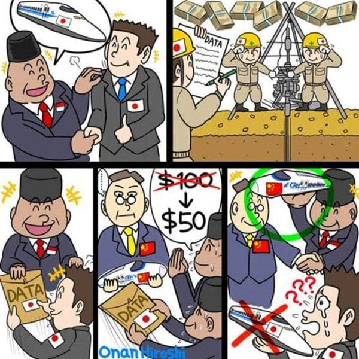

일본은 2000년대 후반부터 자카르타-반둥 구간의 고속철도 사업을 추진
일본측에서 자금을 들여 지질 및 환경조사를 진행하고 설계 데이터 만듬
2015년 수주계약 직전 갑자기 인도네시아에서 철도사업에 정부쪽 지원과 채무 보증이 없을것라고 통보
어이없는 조건에 일본이 주춤하니 그 사이 일본이 만든 데이터 가지고 중국에 넘기고 헐값에 계약
중국이 시공한 고속철도는 공사 지연과 예산 초과 문제가 생겼고, 인도네시아 정부 예산이 투입
걍 이새끼들 뒷통수 치는게 일상임
댓글
수집 당시 댓글 44개
개붕닷넷 · 2 일 전
병신새끼들 중국 돈으로 해도 노선선정 만큼은 일본 제안 우라까이 했으면 멀쩡했을텐데, 노선 제안도 중국거 받아 먹어서 조짐 ㅋㅋㅋㅋㅋㅋ
SOCKOR · 2 일 전
정글니거수준 ㅋㅋㅋ
시니7 · 2 일 전
근데 또 고속철로 인도네시아는 중국한테 얻어맞고 있음
헬조선반도 · 2 일 전
더운나라 병신, 개슬람 둘은 엮이지마라
대동각 · 2 일 전
인니는 신의가 없고...
Sjdk · 2 일 전
엑트오브 킬링 보고 나라가 좀 이상하다 싶었는데 최근 일어나는 일들 보면 확신이 돼감
유해화학물질 · 1 일 전
그거는 캄보디아아녀?
Sjdk · 1 일 전
캄보디아 킬링필드랑은 별개인 인도네시아에서 있었던 학살사건을 다룬 영화임
SmileOn · 2 일 전
여러가지 하고 싶은 말은 많지만, 개인적으로 저새끼들은 사람취급 안 함.. 몇번 겪고 나면 태국이나 베트남 애들이 선녀로 보일 지경이야
문틈 · 2 일 전
제3세계 개발도상국들이 공유하는 특징이긴 함(선진국도 있겠지만) 그런데 인니는 유독 대외신인도를 신경 안쓰는 경향이 있어 죄다 통수치고 좆까라 시전하고 지금도 외자 유치할 시기에 외자 잡아 조지니 죄다 나감 자기네들이 자원 수출 대국이라 상관없다는 마인드가 바탕에 깔려있는데.. 아니 니들 평생 자원만 팔아서 살 것도 아니자너ㅋㅋㅋㅋ
사람판별기 · 2 일 전
쟤네 기득권층은 그걸 원할걸..?
산업핵폐기물 · 2 일 전
ㄹㅇ 자기 지갑에 돈꽂히기만 하면 신경 안쓸듯
댕댕이는긔엽긔 · 2 일 전
개인적으로 이란도 씹쌔끼들인거같음
모하비모히또 · 1 일 전
이란은 의외로 신의있음. 대이란제재할때 한국은 이란으로 부터 받아야할 원유 물량있었는데 미국눈치보느라 안절부절할때 자국유조선으로 기름채워서 갖다줌. 글고 이란공격할때 미국의 명분 거의 없는데 뚜까맞기만함ㅋㅋ
댕댕이는긔엽긔 · 1 일 전
2000년초 우리회사가 이란으로 대우상사(현 포스크인터네셔럴) 통해 수출 보낸 제품건으로 클레임 건적 있었는데 지들 귀책 사유(유기제품을 실외에 덮개도 없이 그냥 3년동안 방치해놈 : MSDS에 실내에 보관하시오. 유효기간 1년 이라 써있음)로 결론남. 근데 이 미친새끼들 같은건으로 왜 보상안해주냐고 10년 주기로 지랄함 (나 입사직전에 같은건으로 클레임 건적있었음) 2년전인가 클레임 연락와서 '뭐지 시발 수출 가장 멀리간게 인도네시아인데??' 하면서 자료 찾다가 발견하고 개 어이없어서 사무실에서 실성한듯이 웃은 적 있음. 포스코 담당자도 같이 클레임 받았는데 거긴 해당 자료가 이미 파기되서 결국 나한테 연락왔는데 자료 공유받고 "아니 자료 날짜 잘못된거 아닌가요? 진짜 그때 나간걸 지들 귀책사유로 끝난걸 또 지금 클레임 거는거에요?....얘네 미친새끼들 아니에요??"라고 통화함
쩔뚜기 · 2 일 전
고무고무 십새들... 고무땜에 줘팰수도 없고..
십장생 · 2 일 전
인니 이새끼들 한두번 통수가 아니네 지들은 똑똑하게 했다고 생각하겠지 나중에 누가 지들이랑 같이 일하겠냐
US991231 · 2 일 전
이제 어느 나라가 인니랑 같이 뭘 하려고 할런지
댕댕이는긔엽긔 · 2 일 전
각 나라별 수출 수입때문에 업무하면서 느낀점 일본 : 뭔가 절차가 귀찮고 요구하는 서류가 필요이상으로 많음 그리고 통관날짜등 약간의 변수 발생에 질색함 중국 : 제품 qc 수준은 조금 딸림.최근들어 항만 관세청 등 핑계되며 선적 며칠전 취소하는경우가 빈번함 대만 : 간만 보다 빼는 경우 빈번함 인도네시아 : 상종하면 안됨 차라리 훈련받은 침팬지와 거래 하십쇼 미국 : 젤 업무처리가 깔끔함 인도 : 무난함.근데 최근 중동전쟁때문에 갑자기 가격 뻥튀기하면서 배짱장사함. 이란 : 나중에 제재풀려도 얘네랑 같이 할 빠에는 차라리 인도네시아놈들과 하는걸 5초 고민해보다 두새끼다 안하는걸 추천함
뜨거원 · 2 일 전
핑계되며? 핑계되며? 핑계되며? 핑계되며? 핑계되며? 핑계되며? 핑계되며? 핑계되며? 핑계되며? 핑계되며? 핑계되며? 핑계되며? 핑계되며? 핑계되며?
댕댕이는긔엽긔 · 2 일 전
핑계대며 앞으로 더 신경쓰도록 하겠습니다.
초고수 · 2 일 전
이렇게 거품물일인가.......아ㅋㅋㅋㅋㅋㅋ
쿠릴쿠릴 · 2 일 전
ㅋㅋㅋㅋㅋㅋㅋㅋㅋㅋㅋㅋㅋㅋㅋㅋㅋㅋ개웃기네 ㅋㅋㅋ
세금공제된115억 · 2 일 전
이새끼들 반둥에 열차 연결해논거 보면 가관임 그따구로 연결해놓고 사용고객수 딸린다고 울상짓는거 보면 개패고싶다 여행가려다가 뭔 역 내려서 시내까지 택시를 30분 타야된다 그래서 포기함
싹퉁뱅이 · 2 일 전
그거 중국 일대일로 계획이랑 연결 돼 있어서 그럼 시내접근성 외에 주위 자원 개발하고 도시 개발할거 다 고려해서 위치 선정한거임 잘돼서 계속 개발되고 커졌으면 좋은 위치 선정이지만 현재로선 조졌지 뭐 시내 접근성도 안좋고 가격도 비싸니 다들 버스 타니까 적자 해소가 안됨
한대만때려도되냐 · 2 일 전
저 고속철이 하루 7만명 이용할 것이라고 예측하고 추진했고 5만명이 이익분기점이라던데 하루 1만 5천 명 정도 이용해서 적자 개 오진다더라 제일 큰 문제가 중국은 돈 적게 쓰고 일대일로 물류이동을 생각하고 진행한 거라 역의 위치사 도심지에서 거리가 멀어서 돈은 비싼데 도심에서 역으로 이동시간 생각하면 빨리 간 것이 의미 없는 수준
일하면진다 · 1 일 전
일대일로 보면 걍 중국 식민지 만들기더만 ㅋㅋㅋㅋ 거기 참여한 나라 정치인들은 거진다 매국노 새끼들이고 중국이 필요한 인프라 까는데 그걸 중국한테 빚내서 깔고있음 ㅋㅋㅋ
아이스크림마싯엉 · 2 일 전
이정도면 인니랑 계약하는게 배임아니냐
콩냉이순장고 · 2 일 전
궁금해서 찾아보니 존나 재밌네. 기존 일본 금융조건안은 40년 만기, 금리 0.1%, 10년거치. 갑자기 엉겨붙은 ㅉ꼐는 50년 만기, 금리 2%. 이것만 보면 ㅉ꼐 고르면 병신인데 이새끼들이 갑자기 '인니 정부 보증 필요 없음, 국가예산 투입 안하셔도 됨ㅋ' 이런 카드를 냈다고 함. 비약이 있지만 전후 흐름은 아래와 같음 1. 일본이 조사 다해줌 2. 중국이 난입해서 깽판 침 3. 인니 입맛 싹 돌아서 중국 고름 4. 정부 돈 하나도 안들어간다고 대통령이 언플 5. 공사비 폭증함 6. 정부가 국영기업에 돈 넣기 시작 7. 부채문제 커짐 8. 인니 정부가 고속철운영사 지분을 정부산하기관으로 가져와서 사실상 정부꺼 됨 (빚도ㅋㅋㅋㅋ) 엄밀한 의미에서 보면 '일본과 체결한 계약을 일방적으로 파기'했다는 틀린 말이고, '타당성, 지질조사를 포함해 사업구조 구체화하며 협의하던 일본 대신, 경쟁입찰 들어온 중국과 본계약 체결'이 맞는 말인가봄. 진짜 대단한 나라야 시발ㅋㅋㅋㅋㅋ
라루루 · 2 일 전
정부 돈 안들어가고 오케 할 수 있지?
달빛찬가 · 2 일 전
지어줄테니 운영권 내놔?
요괴드립 · 2 일 전
윗대가리가 썩었나보네 중국에서 뇌물 겁나 먹였나보다 나라의 미래는 생각안하고 점점 망해가겠네
NoSugar · 2 일 전
저나라애들 나도 몇명 일하는데 저런게 일상임 뒤통수 친다는 의식도 없는것같음 같이 미팅하고 합의한다음 문제소지 있는일 이런게 있으니 이건 절차 따라야함 이거 잘못하면 니 책임으로 넘어가 니가 하지말라 하고 그친구들 생각해서 잘 말해주고 이해했당 하고 미팅 끝났는데 바로 그 조심할일 막 지가 다 메일쏘고 행동하고 비밀서약 이런거 다 깨부수고 다 일벌려놓음 책임도 못지면서 그런일 다 해결해줘야함 무언가 자기 권한 이상의 일을 질러버리는게 능력이라 보나 ? 같이 일하다보면 좀 이상함 인도네시아는 고소당하고 그런게 없나 인도인의 나쁜점만 받은 인도네이아임
초격아츠 · 2 일 전
옛날부터 저런낌새가 있었을텐데 왜 우리는 저런개좉같은 새기들하고 계약한거지?
이라기시따 · 2 일 전
막상 자료받는 중국도 표정 떨떠름한게 포인트
캬루룽 · 2 일 전
아주 상습범이네
선장입수 · 2 일 전
그와중에 일본데이터 날먹한 중국도 공기연장 ㅋㅋㅋ
압e11 · 1 일 전
인도네시아 하니깐 바투좀바 라는 언덕길이 있는데 여기 보면 그냥 경사 심한 언덕길에 트럭들이 다니는 길이야. https://www.youtube.com/watch?v=FXkDlWJMiRA&t=181s 문제가 트럭들이 뒤로 밀려서 뒤집어지고 난리가 나는 곳이라 저 흙바닥길을 잘 정리해서 포장을 싹 하면 되는데 영상 이후 3년이 지난 아직도 공사하고 있음.
인도네시아는인도가아니야 · 1 일 전
시골 산길 다 저모냥이다 에휴 진짜 Sukabumi출장가다가 진짜 뒈질뻔했다
가입이뭐라고 · 1 일 전
우리나라도 전투기사업 당했잖아
MS08소대 · 1 일 전
일본쪽도 한국이 이미 당한게 있은데 똑같이 당했냐고 하면서 당한놈과 인니 개욕하는중 그나마 우리는 전투기사업이라 걍 우리가 써도 돼서 본전은 챙길 수 있는데 저건 쌩으로 다 뜯긴거라 답이 없음
년차개드립 · 1 일 전
근데 결국 중국한테 뒤통수 맞고 공기 연장에 돈도 더 내놓으라 하고 있어서 ㅋㅋㅋ
프로네팔렘 · 1 일 전
정부사업으로 통수치면 전쟁까지 생각하고 치는거 아냐?
함부르거 · 1 일 전
진짜 근본 없는 게 뭔지 보여주는 새끼들.